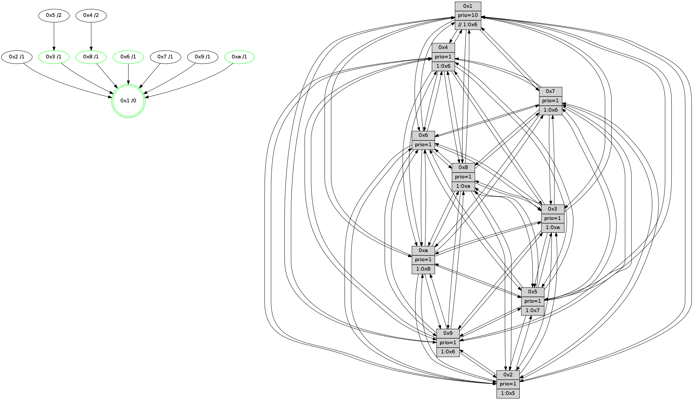

>> << IDX [start] -100 -25 -5 +0 +5 +25 +100 [1115.63391995]
 Previous packets
----------------------------------------------------------------------
1110.117006 beacon01(faad) #0 coord=01,02,03,04,05,06,07,0a,09,08 cycle=688.0ms assoc
-- color-indic=1 64 90 23
1110.126988 beacon02(faad) #0 coord=01,02,03,04,05,06,07,0a,09,08 cycle=688.0ms assoc 64 03 12
1110.136989 beacon03(faad) #0 coord=01,02,03,04,05,06,07,0a,09,08 cycle=688.0ms assoc 64 79 5f
1110.146989 beacon04(faad) #0 coord=01,02,03,04,05,06,07,0a,09,08 cycle=688.0ms assoc 64 0e b5
1110.156990 beacon05(faad) #0 coord=01,02,03,04,05,06,07,0a,09,08 cycle=688.0ms assoc 64 74 f8
1110.166989 beacon06(faad) #0 coord=01,02,03,04,05,06,07,0a,09,08 cycle=688.0ms assoc 64 fa 2f
1110.176989 beacon07(faad) #0 coord=01,02,03,04,05,06,07,0a,09,08 cycle=688.0ms assoc 64 80 62
1110.186995 beacon0a(faad) #0 coord=01,02,03,04,05,06,07,0a,09,08 cycle=688.0ms assoc 64 f1 69
1110.196993 beacon09(faad) #0 coord=01,02,03,04,05,06,07,0a,09,08 cycle=688.0ms assoc 64 7f be
1110.206994 beacon08(faad) #0 coord=01,02,03,04,05,06,07,0a,09,08 cycle=688.0ms assoc 64 05 f3
1110.218246 [Hello(1): seq=618 sym=4,2,9,5,10,3,8,6,7 sysInfo=coloring-mode-on,ColoringModeRequestCalled stat=4:2,9,13,3/2:2,8,12,0/9:13,1,11,7/5:3,7,5,7/10:4,7,0,5/3:15,10,5,5/8:0,6,12,1/6:15,15,15,13/7:1,3,12,13]
1110.222003 [Color(8) seq=331 @0:0 prio=1 >1.@a]
1110.223917 [Hello(6): seq=709 sym=2,3,5,4,7,9,8,10,1 sysInfo=hasWarning stat=2:14,10,13,6/3:3,3,11,10/5:14,6,11,0/4:7,0,4,4/7:5,14,13,10/9:12,14,14,7/8:9,13,7,3/10:15,5,1,12/1:10,5,5,1]
1110.226725 [Color(6) seq=341 @0:0 prio=1]
1110.230008 [Hello(5): seq=709 sym=7,6,4,3,1,9,8,10,2 sysInfo=hasWarning stat=7:11,14,1,12/6:10,4,3,2/4:10,10,11,11/3:9,15,9,12/1:13,15,8,1/9:12,0,10,8/8:8,6,7,0/10:13,2,7,7/2:9,1,10,4]
1110.233017 [Hello(3): seq=709 sym=1,7,6,2,4,8,9,10,5 sysInfo=hasWarning stat=1:0,0,2,0/7:8,15,6,10/6:9,3,5,5/2:12,10,9,0/4:7,7,10,10/8:5,6,3,2/9:5,6,11,13/10:9,9,8,3/5:3,6,0,14]
1110.236212 [Hello(2): seq=705 sym=4,5,7,6,3,9,8,10,1 sysInfo=hasWarning stat=4:2,9,0,9/5:15,2,6,0/7:8,12,14,12/6:8,9,9,11/3:1,5,6,7/9:12,6,6,6/8:10,11,1,9/10:5,5,11,10/1:1,1,8,0]
1110.247255 [Color(10) seq=298 @0:0 prio=1 >1.@8]
1110.257520 [Color(3) seq=338 @0:0 prio=1 >1.@a]
----------------------------------------------------------------------
1110.905137 beacon01(faad) #0 coord=01,02,03,04,05,06,07,0a,09,08 cycle=688.0ms assoc
-- color-indic=1 64 2c 26
1110.915119 beacon02(faad) #0 coord=01,02,03,04,05,06,07,0a,09,08 cycle=688.0ms assoc 64 bf 17
1110.925120 beacon03(faad) #0 coord=01,02,03,04,05,06,07,0a,09,08 cycle=688.0ms assoc 64 c5 5a
1110.935120 beacon04(faad) #0 coord=01,02,03,04,05,06,07,0a,09,08 cycle=688.0ms assoc 64 b2 b0
1110.945120 beacon05(faad) #0 coord=01,02,03,04,05,06,07,0a,09,08 cycle=688.0ms assoc 64 c8 fd
1110.955120 beacon06(faad) #0 coord=01,02,03,04,05,06,07,0a,09,08 cycle=688.0ms assoc 64 46 2a
1110.965120 beacon07(faad) #0 coord=01,02,03,04,05,06,07,0a,09,08 cycle=688.0ms assoc 64 3c 67
1110.975124 beacon0a(faad) #0 coord=01,02,03,04,05,06,07,0a,09,08 cycle=688.0ms assoc 64 4d 6c
1110.995126 beacon08(faad) #0 coord=01,02,03,04,05,06,07,0a,09,08 cycle=688.0ms assoc 64 b9 f6
1111.006672 [Hello(8): seq=653 sym=5,2,3,4,9,6,7,10,1 sysInfo=hasWarning stat=5:9,4,15,0/2:3,1,10,9/3:13,6,15,14/4:15,13,4,10/9:14,5,0,3/6:10,4,14,13/7:15,10,14,3/10:15,13,3,3/1:0,10,3,0]
1111.009902 [Color(1) seq=390 @0:0 prio=10 >>1.@6,1.@7,1.@8]
1111.011669 [Color(2) seq=301 @0:0 prio=1 >1.@5,1.@6,1.@7,1.@8]
1111.013399 [Hello(7): seq=709 sym=2,3,5,6,4,8,9,10,1 sysInfo=hasWarning stat=2:12,12,2,0/3:14,3,2,14/5:3,14,0,1/6:10,6,1,9/4:6,11,3,1/8:15,4,10,1/9:9,0,2,1/10:0,10,4,4/1:0,13,4,0]
1111.016559 [Color(7) seq=268 @0:0 prio=1 >1.@5,1.@6,1.@8,1.@a]
1111.020564 [Hello(4): seq=709 sym=5,7,6,2,3,9,8,10,1 sysInfo= stat=5:15,12,10,14/7:4,3,9,9/6:3,1,12,12/2:4,5,3,13/3:0,13,11,10/9:1,13,15,10/8:4,15,14,4/10:1,10,4,12/1:8,5,5,1]
1111.024084 [Hello(9): seq=653 sym=2,5,3,4,7,6,8,10,1 sysInfo=hasWarning stat=2:10,6,8,7/5:1,9,8,5/3:13,0,13,14/4:2,6,0,1/7:5,10,1,0/6:8,11,4,11/8:15,10,11,3/10:1,14,15,3/1:15,3,4,1]
1111.026895 [Color(9) seq=315 @0:0 prio=1 >1.@5,1.@6,1.@7,1.@8]
1111.031058 [Color(5) seq=316 @0:0 prio=1 >1.@7,1.@8,1.@9,1.@a]
1111.032808 [Hello(10): seq=642 sym=6,2,3,8,7,5,9,4,1 sysInfo=hasWarning stat=6:13,5,14,6/2:13,11,1,9/3:14,12,4,10/8:7,11,6,0/7:0,7,13,5/5:4,11,11,14/9:10,14,14,2/4:1,13,14,9/1:1,5,14,1]
1111.037088 [Color(4) seq=289 @0:0 prio=1 >1.@5,1.@6,1.@7,1.@8]
----------------------------------------------------------------------
1111.693268 beacon01(faad) #0 coord=01,02,03,04,05,06,07,0a,09,08 cycle=688.0ms assoc
-- color-indic=1 64 18 3e
1111.703250 beacon02(faad) #0 coord=01,02,03,04,05,06,07,0a,09,08 cycle=688.0ms assoc 64 8b 0f
1111.713250 beacon03(faad) #0 coord=01,02,03,04,05,06,07,0a,09,08 cycle=688.0ms assoc 64 f1 42
1111.723250 beacon04(faad) #0 coord=01,02,03,04,05,06,07,0a,09,08 cycle=688.0ms assoc 64 86 a8
1111.733251 beacon05(faad) #0 coord=01,02,03,04,05,06,07,0a,09,08 cycle=688.0ms assoc 64 fc e5
1111.743250 beacon06(faad) #0 coord=01,02,03,04,05,06,07,0a,09,08 cycle=688.0ms assoc 64 72 32
1111.753252 beacon07(faad) #0 coord=01,02,03,04,05,06,07,0a,09,08 cycle=688.0ms assoc 64 08 7f
1111.763257 beacon0a(faad) #0 coord=01,02,03,04,05,06,07,0a,09,08 cycle=688.0ms assoc 64 79 74
1111.773256 beacon09(faad) #0 coord=01,02,03,04,05,06,07,0a,09,08 cycle=688.0ms assoc 64 f7 a3
1111.783259 beacon08(faad) #0 coord=01,02,03,04,05,06,07,0a,09,08 cycle=688.0ms assoc 64 8d ee
1111.794798 [Hello(5): seq=710 sym=7,6,4,3,1,9,8,10,2 sysInfo=hasWarning stat=7:11,14,1,12/6:10,4,3,2/4:10,11,11,11/3:10,0,9,12/1:13,15,8,1/9:12,0,10,8/8:9,6,7,0/10:14,3,7,7/2:10,1,10,4]
1111.798556 [Color(10) seq=299 @0:0 prio=1 >1.@8]
1111.800452 [Hello(3): seq=710 sym=1,7,6,2,4,8,9,10,5 sysInfo=hasWarning stat=1:1,1,2,0/7:9,0,6,10/6:9,3,5,5/2:12,11,9,0/4:8,8,10,10/8:6,6,3,2/9:6,7,11,13/10:10,9,8,3/5:3,7,0,14]
1111.803014 [Color(8) seq=332 @0:0 prio=1 >1.@a]
1111.805515 [Color(3) seq=339 @0:0 prio=1 >1.@a]
1111.810737 [Hello(2): seq=706 sym=4,5,7,6,3,9,8,10,1 sysInfo=hasWarning stat=4:3,10,0,9/5:15,3,6,0/7:9,13,14,12/6:8,9,9,11/3:1,6,6,7/9:13,7,6,6/8:11,11,1,9/10:6,6,11,10/1:1,1,8,0]
1111.816724 [Hello(6): seq=710 sym=2,3,5,4,7,9,8,10,1 sysInfo=hasWarning stat=2:15,11,13,6/3:4,4,11,10/5:15,7,11,0/4:8,1,4,4/7:6,15,13,10/9:13,15,14,7/8:10,13,7,3/10:0,6,1,12/1:11,6,5,1]
1111.820492 [Color(6) seq=342 @0:0 prio=1]
----------------------------------------------------------------------
1112.481400 beacon01(faad) #0 coord=01,02,03,04,05,06,07,0a,09,08 cycle=688.0ms assoc
-- color-indic=1 64 a4 3b
1112.491381 beacon02(faad) #0 coord=01,02,03,04,05,06,07,0a,09,08 cycle=688.0ms assoc 64 37 0a
1112.501383 beacon03(faad) #0 coord=01,02,03,04,05,06,07,0a,09,08 cycle=688.0ms assoc 64 4d 47
1112.511382 beacon04(faad) #0 coord=01,02,03,04,05,06,07,0a,09,08 cycle=688.0ms assoc 64 3a ad
1112.521382 beacon05(faad) #0 coord=01,02,03,04,05,06,07,0a,09,08 cycle=688.0ms assoc 64 40 e0
1112.531384 beacon06(faad) #0 coord=01,02,03,04,05,06,07,0a,09,08 cycle=688.0ms assoc 64 ce 37
1112.541383 beacon07(faad) #0 coord=01,02,03,04,05,06,07,0a,09,08 cycle=688.0ms assoc 64 b4 7a
1112.551388 beacon0a(faad) #0 coord=01,02,03,04,05,06,07,0a,09,08 cycle=688.0ms assoc 64 c5 71
1112.561387 beacon09(faad) #0 coord=01,02,03,04,05,06,07,0a,09,08 cycle=688.0ms assoc 64 4b a6
1112.571387 beacon08(faad) #0 coord=01,02,03,04,05,06,07,0a,09,08 cycle=688.0ms assoc 64 31 eb
1112.584213 [Hello(10): seq=643 sym=6,2,3,8,7,5,9,4,1 sysInfo=hasWarning stat=6:14,6,14,6/2:14,11,1,9/3:15,13,4,10/8:7,12,6,0/7:0,7,13,5/5:4,11,11,14/9:10,14,14,2/4:1,14,14,9/1:1,5,14,1]
1112.591686 [Color(9) seq=316 @0:0 prio=1 >1.@6,1.@7,1.@8,1.@a]
1112.594567 [Hello(7): seq=710 sym=2,3,5,6,4,8,9,10,1 sysInfo=hasWarning stat=2:13,12,2,0/3:15,4,2,14/5:3,15,0,1/6:11,7,1,9/4:7,12,3,1/8:0,5,10,1/9:10,1,2,1/10:1,11,4,4/1:0,14,4,0]
1112.597388 [Color(7) seq=269 @0:0 prio=1 >1.@6,1.@8,1.@a]
1112.600634 [STC(1) #0.167 tree-change,inconsistent-stability,stable,to-color d=0]
1112.602262 [Color(1) seq=391 @0:0 prio=10 >>1.@6,1.@7,1.@8]
1112.605572 [Color(5) seq=317 @0:0 prio=1 >1.@7,1.@8,1.@9,1.@a]
1112.608852 [Color(4) seq=290 @0:0 prio=1 >1.@6,1.@7,1.@8,1.@a]
----------------------------------------------------------------------
1113.269530 beacon01(faad) #0 coord=01,02,03,04,05,06,07,0a,09,08 cycle=688.0ms assoc
-- color-indic=1 64 60 35
1113.279513 beacon02(faad) #0 coord=01,02,03,04,05,06,07,0a,09,08 cycle=688.0ms assoc 64 f3 04
1113.289512 beacon03(faad) #0 coord=01,02,03,04,05,06,07,0a,09,08 cycle=688.0ms assoc 64 89 49
1113.299511 beacon04(faad) #0 coord=01,02,03,04,05,06,07,0a,09,08 cycle=688.0ms assoc 64 fe a3
1113.309512 beacon05(faad) #0 coord=01,02,03,04,05,06,07,0a,09,08 cycle=688.0ms assoc 64 84 ee
1113.319513 beacon06(faad) #0 coord=01,02,03,04,05,06,07,0a,09,08 cycle=688.0ms assoc 64 0a 39
1113.329517 beacon07(faad) #0 coord=01,02,03,04,05,06,07,0a,09,08 cycle=688.0ms assoc 64 70 74
1113.339520 beacon0a(faad) #0 coord=01,02,03,04,05,06,07,0a,09,08 cycle=688.0ms assoc 64 01 7f
1113.349518 beacon09(faad) #0 coord=01,02,03,04,05,06,07,0a,09,08 cycle=688.0ms assoc 64 8f a8
1113.359519 beacon08(faad) #0 coord=01,02,03,04,05,06,07,0a,09,08 cycle=688.0ms assoc 64 f5 e5
1113.370454 [STC(7)->1 #0.167 to-color d=1]
1113.371748 [Hello(1): seq=620 sym=4,2,9,5,10,3,8,6,7 sysInfo=coloring-mode-on,ColoringModeRequestCalled stat=4:3,11,13,3/2:4,9,12,0/9:14,2,11,7/5:4,9,5,7/10:6,9,0,5/3:1,12,5,5/8:1,8,12,1/6:1,1,15,13/7:2,4,12,13]
1113.374916 [Hello(2): seq=707 sym=4,5,7,6,3,9,8,10,1 sysInfo=hasWarning stat=4:3,11,0,9/5:15,4,6,0/7:10,14,14,12/6:9,10,9,11/3:1,6,6,7/9:13,8,6,6/8:11,11,1,9/10:7,6,11,10/1:1,2,9,0]
1113.377759 [STC(2)->1 #0.167 to-color d=1]
1113.379039 [Hello(3): seq=711 sym=1,7,6,2,4,8,9,10,5 sysInfo=hasWarning stat=1:2,2,3,0/7:10,1,6,10/6:10,4,5,5/2:13,12,9,0/4:8,9,10,10/8:6,6,3,2/9:6,8,11,13/10:11,9,8,3/5:3,8,0,14]
1113.382694 [STC(9)->1 #0.167 to-color d=1]
1113.384442 [Hello(5): seq=711 sym=7,6,4,3,1,9,8,10,2 sysInfo=hasWarning stat=7:11,14,1,12/6:11,5,3,2/4:10,12,11,11/3:11,1,9,12/1:13,15,8,1/9:12,0,10,8/8:9,7,7,0/10:15,4,7,7/2:11,1,10,4]
1113.389111 [Hello(6): seq=711 sym=2,3,5,4,7,9,8,10,1 sysInfo=hasWarning stat=2:15,11,13,6/3:4,4,11,10/5:0,8,11,0/4:8,2,4,4/7:7,0,13,10/9:13,0,14,7/8:10,13,7,3/10:1,6,1,12/1:11,7,6,1]
1113.392054 [STC(3)->1 #0.167 tree-change,inconsistent-stability,stable,to-color d=1]
1113.393826 [STC(10)->1 #0.167 tree-change,inconsistent-stability,stable,to-color d=1]
1113.395473 [Color(10) seq=300 @0:0 prio=1 >1.@8]
1113.397420 [Color(6) seq=343 @0:0 prio=1]
1113.399913 [Color(3) seq=340 @0:0 prio=1 >1.@a]
----------------------------------------------------------------------
1114.057659 beacon01(faad) #0 coord=01,02,03,04,05,06,07,0a,09,08 cycle=688.0ms assoc
-- color-indic=1 64 dc 30
1114.067642 beacon02(faad) #0 coord=01,02,03,04,05,06,07,0a,09,08 cycle=688.0ms assoc 64 4f 01
1114.077643 beacon03(faad) #0 coord=01,02,03,04,05,06,07,0a,09,08 cycle=688.0ms assoc 64 35 4c
1114.087643 beacon04(faad) #0 coord=01,02,03,04,05,06,07,0a,09,08 cycle=688.0ms assoc 64 42 a6
1114.097642 beacon05(faad) #0 coord=01,02,03,04,05,06,07,0a,09,08 cycle=688.0ms assoc 64 38 eb
1114.107643 beacon06(faad) #0 coord=01,02,03,04,05,06,07,0a,09,08 cycle=688.0ms assoc 64 b6 3c
1114.117643 beacon07(faad) #0 coord=01,02,03,04,05,06,07,0a,09,08 cycle=688.0ms assoc 64 cc 71
1114.127648 beacon0a(faad) #0 coord=01,02,03,04,05,06,07,0a,09,08 cycle=688.0ms assoc 64 bd 7a
1114.137647 beacon09(faad) #0 coord=01,02,03,04,05,06,07,0a,09,08 cycle=688.0ms assoc 64 33 ad
1114.147649 beacon08(faad) #0 coord=01,02,03,04,05,06,07,0a,09,08 cycle=688.0ms assoc 64 49 e0
1114.158812 [Hello(8): seq=655 sym=5,2,3,4,9,6,7,10,1 sysInfo=hasWarning stat=5:11,6,15,0/2:5,2,11,9/3:14,8,0,14/4:0,15,4,10/9:15,7,1,3/6:12,6,14,13/7:1,12,14,3/10:0,14,4,3/1:1,12,4,0]
1114.161424 [Hello(4): seq=711 sym=5,7,6,2,3,9,8,10,1 sysInfo= stat=5:1,12,10,14/7:4,3,9,9/6:5,3,12,12/2:6,5,4,13/3:2,15,12,10/9:1,13,0,10/8:5,0,15,4/10:2,12,4,12/1:9,6,5,1]
1114.164459 [Color(1) seq=392 @0:0 prio=10 >>1.@6,1.@7,1.@8]
1114.166506 [STC(4)->8-.->1 #0.167 to-color d=2]
1114.171460 [STC(5)->3-.->1 #0.167 to-color d=2]
1114.173150 [Hello(9): seq=655 sym=2,5,3,4,7,6,8,10,1 sysInfo=hasWarning stat=2:11,6,8,7/5:3,11,8,5/3:14,2,14,14/4:3,8,0,1/7:6,10,1,0/6:10,13,4,11/8:0,11,11,3/10:3,0,15,3/1:15,5,5,1]
1114.178159 [Hello(10): seq=644 sym=6,2,3,8,7,5,9,4,1 sysInfo=hasWarning stat=6:14,7,14,6/2:14,12,1,9/3:15,14,4,10/8:7,12,6,0/7:1,8,14,5/5:4,12,11,14/9:10,15,14,2/4:1,15,14,9/1:2,6,15,1]
1114.184649 [Hello(7): seq=711 sym=2,3,5,6,4,8,9,10,1 sysInfo=hasWarning stat=2:14,12,3,0/3:0,5,3,14/5:4,0,0,1/6:12,8,1,9/4:7,13,3,1/8:0,5,10,1/9:10,1,3,1/10:2,12,4,4/1:1,15,5,0]
----------------------------------------------------------------------
1114.845791 beacon01(faad) #0 coord=01,02,03,04,05,06,07,0a,09,08 cycle=688.0ms assoc
-- color-indic=1 64 08 05
1114.855774 beacon02(faad) #0 coord=01,02,03,04,05,06,07,0a,09,08 cycle=688.0ms assoc 64 9b 34
1114.865773 beacon03(faad) #0 coord=01,02,03,04,05,06,07,0a,09,08 cycle=688.0ms assoc 64 e1 79
1114.875774 beacon04(faad) #0 coord=01,02,03,04,05,06,07,0a,09,08 cycle=688.0ms assoc 64 96 93
1114.885774 beacon05(faad) #0 coord=01,02,03,04,05,06,07,0a,09,08 cycle=688.0ms assoc 64 ec de
1114.895773 beacon06(faad) #0 coord=01,02,03,04,05,06,07,0a,09,08 cycle=688.0ms assoc 64 62 09
1114.905775 beacon07(faad) #0 coord=01,02,03,04,05,06,07,0a,09,08 cycle=688.0ms assoc 64 18 44
1114.915778 beacon0a(faad) #0 coord=01,02,03,04,05,06,07,0a,09,08 cycle=688.0ms assoc 64 69 4f
1114.925779 beacon09(faad) #0 coord=01,02,03,04,05,06,07,0a,09,08 cycle=688.0ms assoc 64 e7 98
1114.935780 beacon08(faad) #0 coord=01,02,03,04,05,06,07,0a,09,08 cycle=688.0ms assoc 64 9d d5
1114.948322 [Hello(1): seq=621 sym=4,2,9,5,10,3,8,6,7 sysInfo=coloring-mode-on,ColoringModeRequestCalled stat=4:4,11,14,3/2:5,9,13,0/9:15,2,12,7/5:5,9,6,7/10:7,10,1,5/3:2,13,6,5/8:2,8,12,1/6:2,2,15,13/7:3,4,12,13]
1114.951674 [Color(10) seq=301 @0:0 prio=1 >1.@8]
1114.955152 [Hello(6): seq=712 sym=2,3,5,4,7,9,8,10,1 sysInfo=hasWarning stat=2:0,11,13,6/3:4,5,11,10/5:0,8,12,0/4:9,2,5,4/7:8,0,14,10/9:14,0,14,7/8:11,13,7,3/10:2,6,1,12/1:12,8,6,1]
1114.958404 [Hello(5): seq=712 sym=7,6,4,3,1,9,8,10,2 sysInfo=hasWarning stat=7:12,14,1,12/6:12,6,3,2/4:10,12,11,11/3:11,2,10,12/1:13,15,8,1/9:13,0,10,8/8:9,7,7,0/10:0,5,8,7/2:11,1,10,4]
1114.961628 [Color(6) seq=344 @0:0 prio=1]
1114.964174 [Hello(2): seq=708 sym=4,5,7,6,3,9,8,10,1 sysInfo=hasWarning stat=4:4,11,1,9/5:0,4,7,0/7:11,14,15,12/6:10,11,9,11/3:2,7,7,7/9:14,8,7,6/8:12,11,1,9/10:8,7,12,10/1:1,3,9,0]
1114.967858 [TreeStatus(3)-.->1 #0.167 tree-change,inconsistent-stability,stable child=1]
1114.969691 [Color(3) seq=341 @0:0 prio=1 >1.@a]